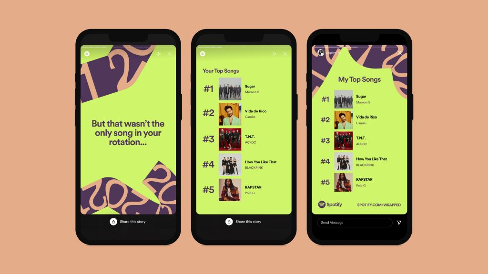
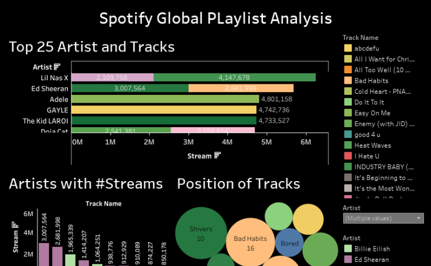

Spring 2022
This dataset contains location data, availability, number of reviews and other types of data about
Airbnb listings in New York City. I re-engineered these features to build a Gradient Boosting Regressor.
When I first started working on the dataset, it was difficult to find correlations between the features and price.
The initial model only had about 10% accuracy. After generating several features based on the original dataset, I was able to increase the accuracy to 60%. It was a lot of fun solving the issues to improve the accuracy in this project.

Predicting whether a song would be A hit based on its acoustic features using classification tree, logistic regression, and random forest in R Studio. In the process of building the prediciton models, we found other insights that are also worth looking into, such as lyrics and lyrics sentiment.

This is my Tableau Public portfolio where I built interactive visualizations for different topics. I l how Tableau makes data easy to interpret and enables you to represent it visually.
The sinking of the RMS Titanic is one of the most infamous shipwrecks in history. This sensational tragedy shocked the international community and led to better safety regulations for ships.
This project explores the most importable factors that contributed to the passenger's survival using plotting tools and logistic regression in Python.